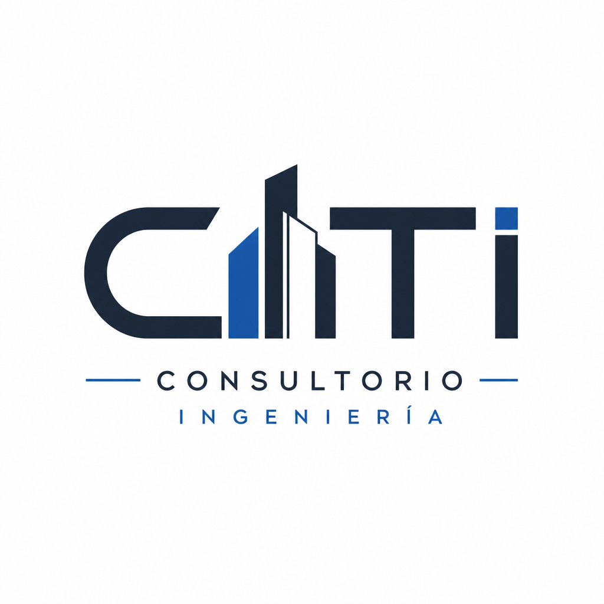

Consultorio de Ingeniería,
Tecnología e Innovación
Universidad Cooperativa de Colombia · Campus Ibagué–Espinal · 2026
Ingeniería de Sistemas + Ingeniería Civil
1 / 12
Objetivo general
Ofrecer a la comunidad tolimense un espacio de asesorías, capacitación, orientación profesional, convenios y exploración profesional que conecte el conocimiento académico con las necesidades de empresarios, instituciones y ciudadanía.
GratisAsesorías a PyMEs
6Líneas de acción
2Programas integrados
2 / 12
Justificación
- Ibagué presenta crecimiento económico con numerosas PyMEs que necesitan orientación tecnológica e infraestructural
- La universidad no puede vivir de espaldas al sector productivo
- Los estudiantes necesitan confrontar conocimientos teóricos con la realidad empresarial
- Primera iniciativa de este tipo en la región — ventaja comparativa para la UCC
3 / 12
Estructura organizacional
Subdirección Académica UCC
│
Director CITI (Programas Sistemas + Civil)
│
┌────┼────┐
│ │ │
Coord. Coord. Coord.
Sist. Civil Elect.
│ │ │
└────┼────┘
│
Consultor permanente (8° sem+)
│
Estudiantes asesores (3° sem+) ← Docentes asesores
4 / 12
Líneas de acción
1. Práctica empresarial
Aprendizaje en el trabajo con empresas del Tolima.
2. Asesorías PyME
Casos simples y complejos con informes mensuales.
3. Educación no formal
Seminarios y talleres a costo mínimo.
4. Exploración profesional
Colegios de Ibagué y municipios — grado 11.
5. Convenios
Alianzas externas cuando se requiere talento especializado.
6. Programa radial
Consultas, bolsa de empleo y divulgación semanal.
5 / 12
Servicios por área
Ingeniería de Sistemas
- Auditoría de sistemas y software
- Desarrollo web y e-commerce
- Ofimática y programación
- Redes, telecomunicaciones, IoT
Ingeniería Civil
- Revisión de planos y metrados
- Asesoría NSR-10
- Gestión de proyectos de obra
- CAD/BIM y sostenibilidad
6 / 12
Actores del ecosistema
| Actor | Tipo | Rol |
|---|
| Director CITI | Principal | Gobernanza y aprobación |
| Coordinadores | Principal | Supervisión y promoción |
| Estudiante consultor | Principal | Atención al público |
| PyMEs / empresas | Principal | Usuarios del servicio |
| Estudiantes asesores | Secundario | Ejecución de casos |
| Docentes / egresados | Secundario | Dirección técnica |
| Gremios / entidades públicas | Secundario | Aliados estratégicos |
7 / 12
Proceso de atención
1Solicitud escrita
2Revisión coordinadores
3Aprobación programa
4Asignación equipo
5Ejecución + informes
6Cierre y socialización
El consultorio es veedor del proceso. Posible homologación como trabajo de grado.
8 / 12
Programa radial CITI
| Segmento | Duración | Responsable |
|---|
| Invitado especial | 20 min | Experto / empresario |
| Momento ingenieril | 7 min | Estudiante |
| Reflexión social | 6 min | Estudiante |
| Consulta técnica | 6 min | Especialista |
| Bolsa de empleo | 5 min | Consultor CITI |
9 / 12
Infraestructura y apoyo logístico
- Oficina con computadoras, mobiliario y espacio de atención al usuario
- Oficinas para coordinadores de Sistemas y Civil
- Sala de capacitación para 8–12 personas
- Archivo documental con 7+ carpetas de registro
- Presupuesto universitario: papelería, dotación, gastos generales
10 / 12
Cronograma 2026-1
FebDiagnóstico sectorial
MarApertura oficina
MarCapacitación consultores
AbrPrograma radial
Abr-MayoExploración colegios
SemestreAsesorías PyME
JunArchivo semestral
11 / 12
¿Listos para transformar
el Tolima?
CITI — Conocimiento que construye región
Universidad Cooperativa de Colombia
Facultad de Ingeniería · Ibagué–Espinal · 2026
12 / 12